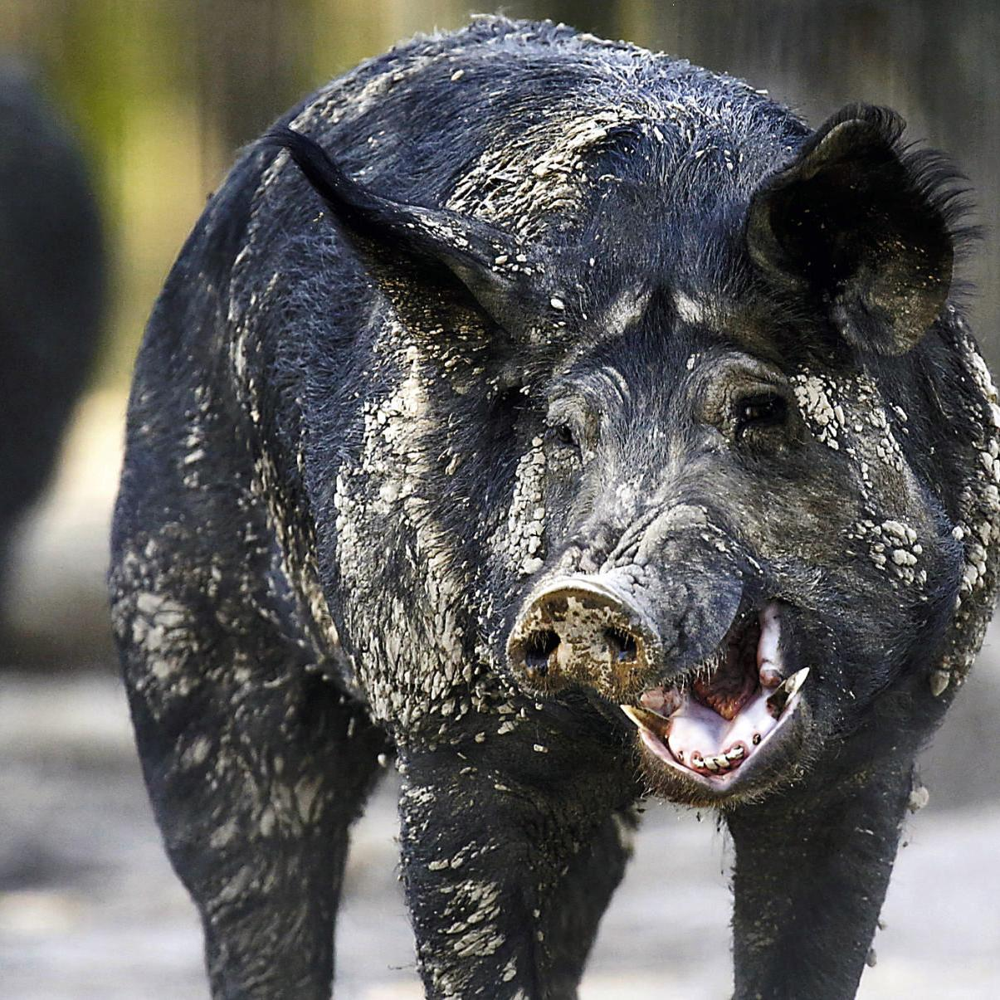
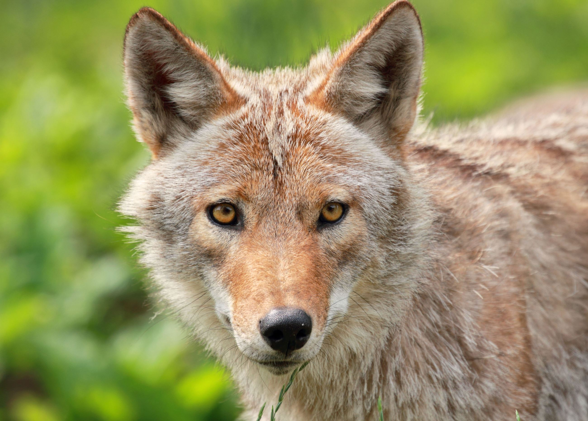
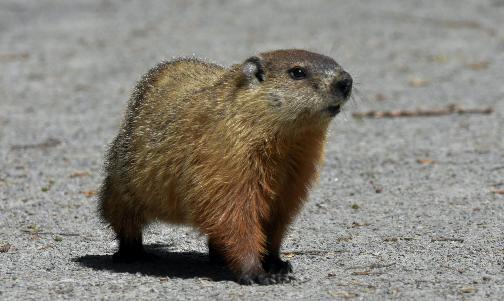
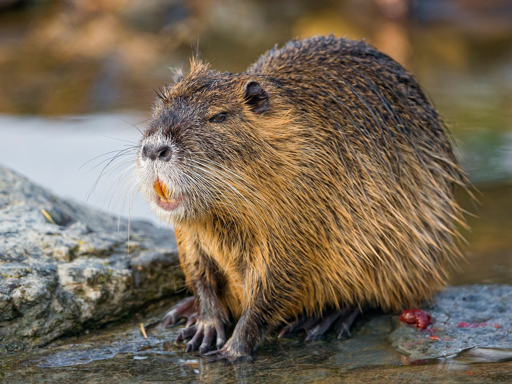
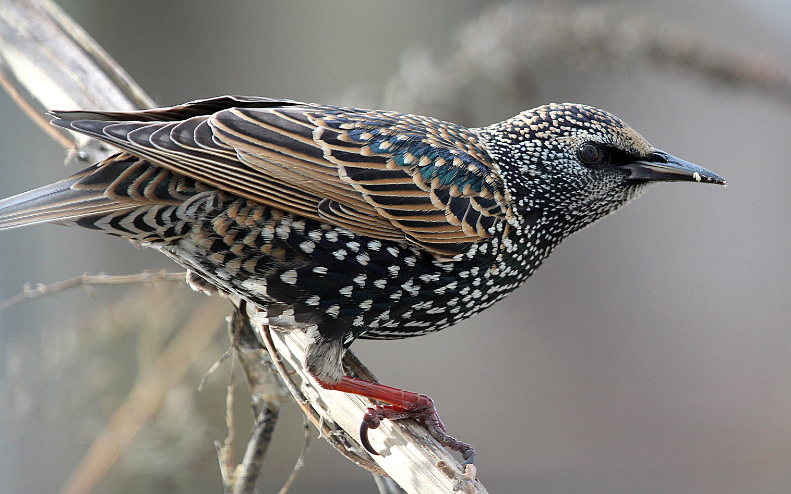
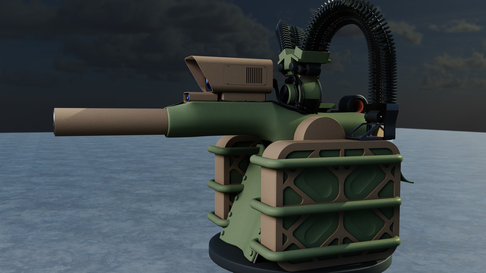

A $2.5B crisis no one is solving.
Feral hogs are the most destructive invasive vertebrate in the continental US. 9M+ animals across 35+ states, causing $2.5B+ in annual damage. They destroy crops, kill livestock, contaminate water, carry 30+ diseases including potential FMD vectors, and reproduce faster than any existing method can control.
Every incumbent solution — trapping, aerial gunning, poison bait — fails the same fundamental math: you need to remove 66% of the population annually just to hold numbers flat. Current methods achieve ~29%. The population grows regardless of spending.
Seven species. One platform.
Sentinel's authorised target list spans the most ecologically and economically destructive invasive vertebrate pests in the US. One hardware platform. Multiple ammunition types. Configurable engagement profiles per species.







Built from the ground up. No legacy.

Purpose-built autonomous sentry for continuous unattended field operation. Full-electric actuation. Belt-fed multi-calibre. AI detection and tracking. Operator-authorised engagement with per-round chain-of-custody telemetry.
The C-UAS field has a data quality crisis.
Every kinetic autonomous system — pest control or defense — needs training data from real-world engagements. Nobody has it. Existing C-UAS systems train on simulated data or controlled test shots. Sentinel generates real engagement data from day one of field deployment.
Every deployment produces the exact dataset that defense primes and autonomy companies will pay to access: real kinetic engagements against non-cooperative targets in uncontrolled environments. This is Sentinel's durable moat.
Not pest management. Pest elimination.
Every incumbent sells mitigation. Sentinel is the first system capable of actually solving the problem. The pricing model reflects that.
Without Sentinel
Sentinel Managed Service
Illustrative: 1,000-acre Texas cattle ranch. Floor deployment scenario. Texas alone has 2.6M feral hogs across 230+ counties.
National Feral Hog Population Spread
Feral Hog Propagation 1982–2024
Ten-Year Strategic Roadmap
$1M. 6–7 months. Live-fire TRL 6.
Hardware-first sprint. Build, break, refine, repeat. No bloat. No theoretical perfection. A working system in the field.
Setup & Initial Sprint
LLC/IP formation, ATF consult, workspace, core team onboarded. First CAD sprint. Long-lead parts ordered.
Mechanism Prototyping
Fabricate and test electric actuation and belt feed on bench models. CAD sprint driven by findings.
Core Assembly
Integrate sensors and actuation. Initial dry-cycle testing. CAD sprint for fixes and refinements.
Software Sprint
AI detection and tracking, fire control, networked APIs. Full dry-cycle integration and validation.
Static Live-Fire
Range tests: accuracy, multi-ammo switching, reliability under sustained fire. CAD sprint on failures.
Dynamic Validation — TRL 6
X-Y mount, dynamic tracking, swarm engagement tests. Final iterations. Prototype ready for field trials.
Seed: $5–10M+
Pre-seed to working prototype. This capital builds the system, proves the unit economics, and establishes the data moat.
Use of Funds
Key Milestones
The future of pest control is autonomous.
Sentinel Robotics is building the first kinetic autonomous system capable of solving — not managing — the invasive species crisis. The hardware is designed. The market is proven. The data moat starts on day one.